Ética de Investigación en Ciencias Sociales · 2026
Ciencia Abierta e Investigación Social
Prof. Juan Carlos Castillo Departamento de Sociología · Universidad de Chile 2do Semestre 2026

Contenidos
- 1.- ¿Crisis de apertura en ciencia?
- 2.- Principios de la ciencia
- 3.- Problemas de apertura y presión por publicar
- 4.- Herramientas: pre-registros
- 5.- Acceso: pre-prints y licencias
¿Crisis de apertura en ciencia?
- Transparencia
- Reproducibilidad
- Acceso
Flujo de investigación científica
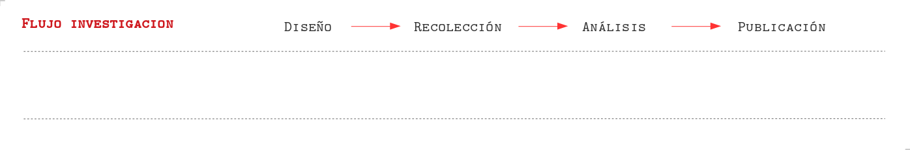
Flujo de investigación científica y ciencia abierta
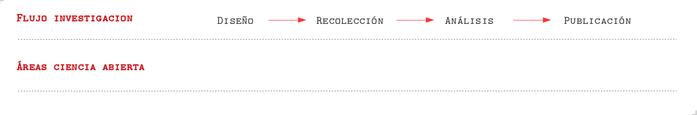
1. Transparencia
Flujo de investigación científica y ciencia abierta
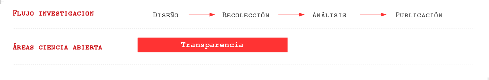
Transparencia 1: Diseño
Presión por publicar resultados “relevantes” (rechazar \(H_0\))
HARKing: Hypothesis After the Results are Known
Se adaptan las hipótesis y teorías a los resultados
Barreras al avance del conocimiento ya que solo conocemos lo que “resulta”
Transparencia 2: Datos
Dificultades en el acceso y la documentación de la información levantada en la investigación
Barreras a la reproducibilidad y al avance de investigaciones con datos muchas veces levantados con fondos públicos
2. Reproducibilidad
Reproducibilidad
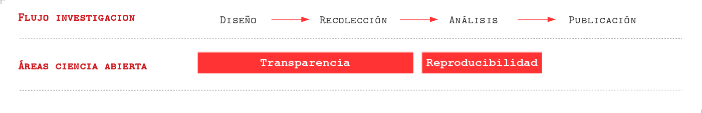
¿Qué porcentaje de los estudios publicados son reproducibles?
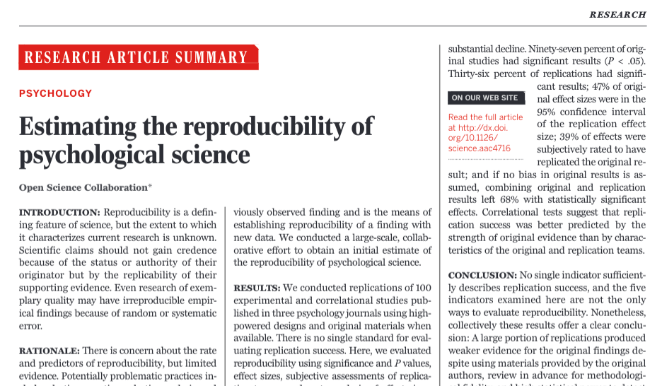
… alrededor de un 40%! (varía por disciplina)
¿Por qué ocurre la crisis de reproducibilidad?
Algunas razones:
pobre documentación metodológica
sesgo hacia búsqueda y publicación de resultados significativos (p-hacking), atribuido a la presión por publicar
en algunos casos, falseamiento de datos/análisis
3. Acceso
Acceso
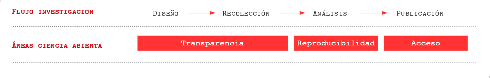
El ciclo actual de publicación científica
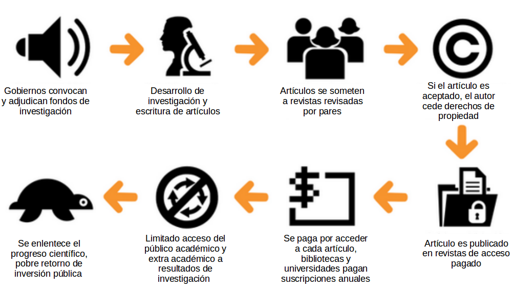
(Adaptado de: https://creativecommons.org/about/program-areas/open-access/)
Barreras de pago

Modelo de publicación científica

las vacas hacen leche (se ordeñan solas)
otras vacas revisan la leche (gratis)
las vacas le pagan al granjero para distribuir la leche
luego el granjero le vende la leche de vuelta a las vacas
Márgenes de ganancia
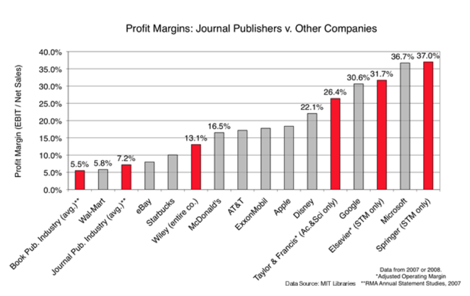
Beneficios del acceso abierto
Adaptado de: http://whyopenresearch.org/
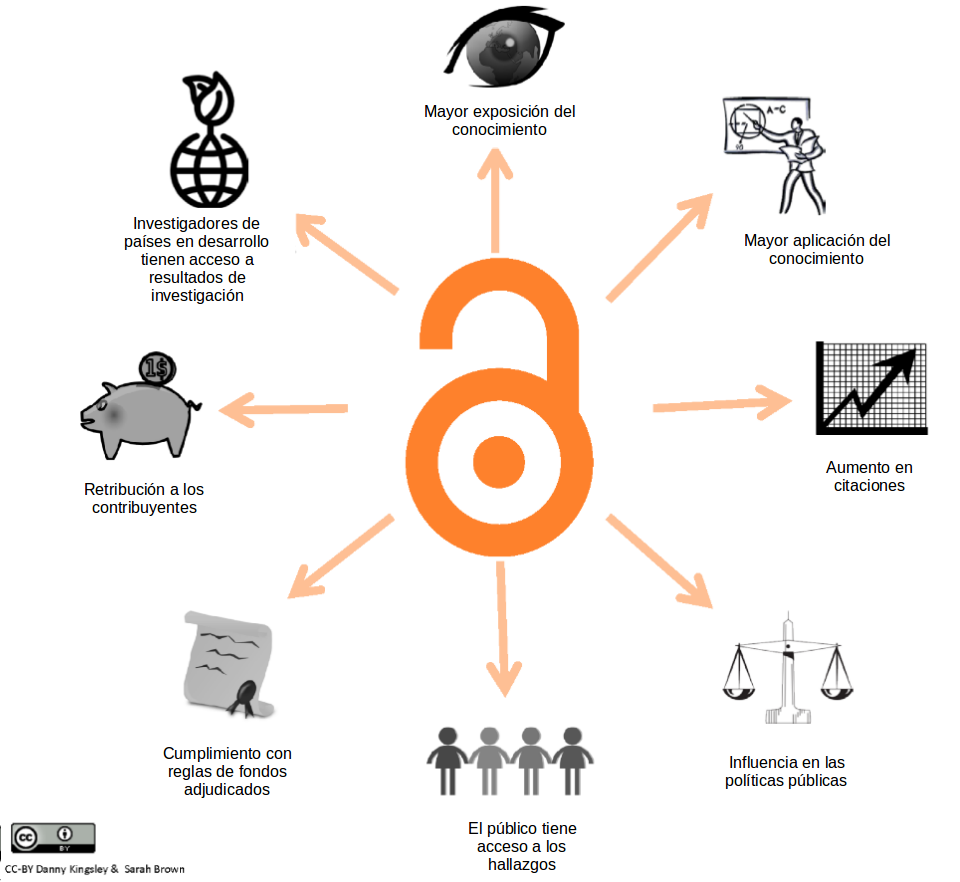
Enfrentando la crisis
tema de ética científica y también de eficiencia
por ahora en Chile, la apertura depende en gran parte de la voluntad de los investigadores, pero …
crecientemente financistas y medios de publicación se hacen más exigentes; gobiernos extranjeros ya han implementado políticas de transparencia, acceso y reproducibilidad
necesidad de herramientas metodológicas
Principios de la ciencia
Ciencia abierta: vuelta a los principios de la ciencia (Merton)
Universalismo: cualquier persona puede contribuir al conocimiento científico, independiente de su origen.
Comunalidad: los hallazgos de la ciencia pertenecen a la comunidad y no a quién los descubrió.
Desinterés: la conducta de investigadores debe estar orientada por la búsqueda de la verdad, no con intereses personales ni monetarios.
Escepticismo organizado: los hallazgos no se aceptan porque sí, se requieren pruebas.
¿Se cumplen los principios de la ciencia?
Investigación de Anderson et al. (2007), pregunta a más de 3000 investigadores sobre cumplimiento de principios de la ciencia mertonianos (agregan dos más: gobernanza y calidad)
Dos grupos de académicos: carrera temprana y carrera intermedia
Para todos los principios identifica normas y contra-normas
Normas y contra-normas de la ética científica (Anderson, 2007)
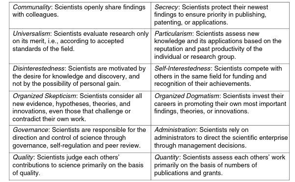
Normas y contra-normas de la ética científica (Anderson, 2007)
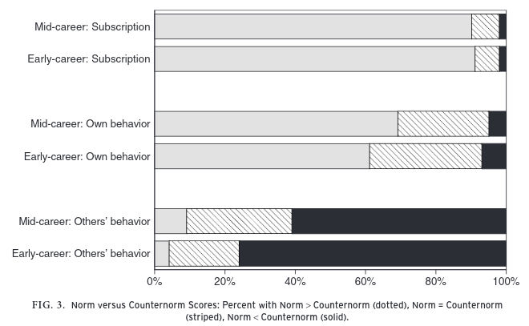
Problemas de apertura
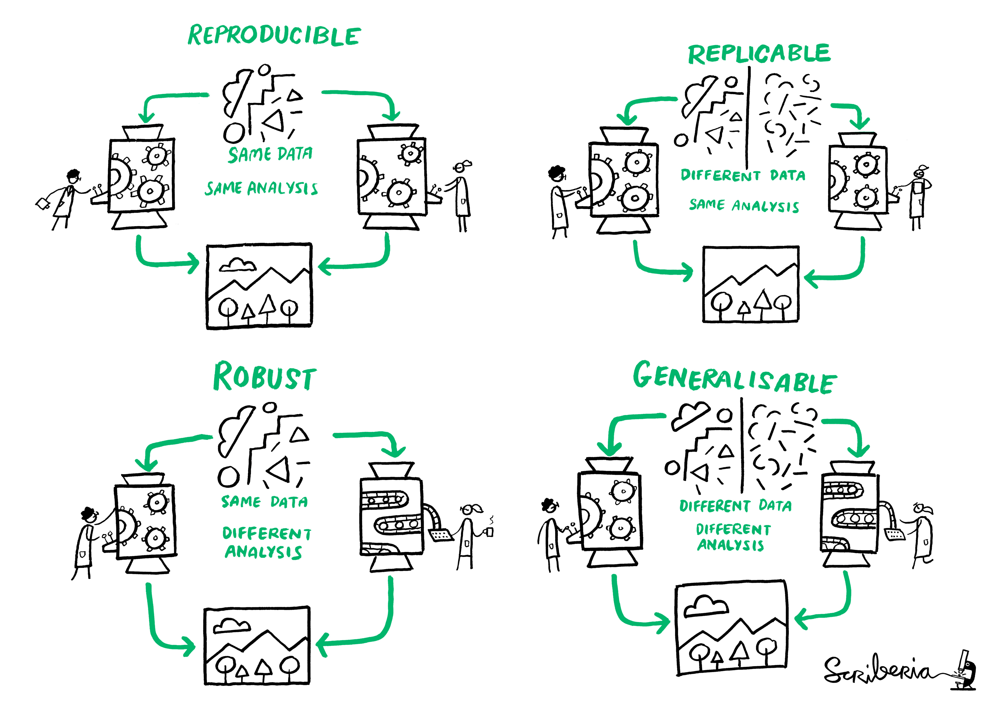
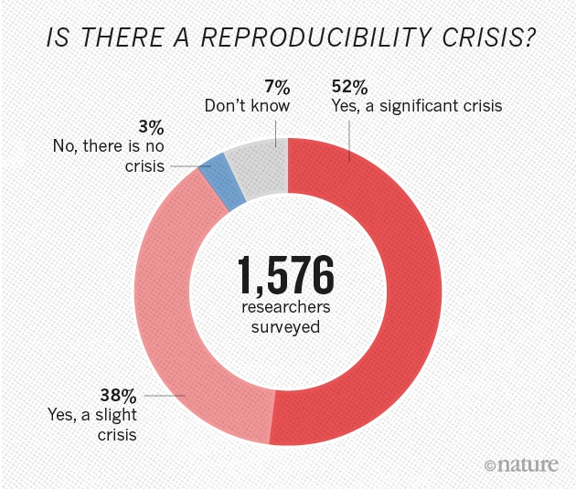
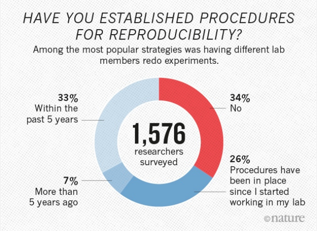


Presión por publicar
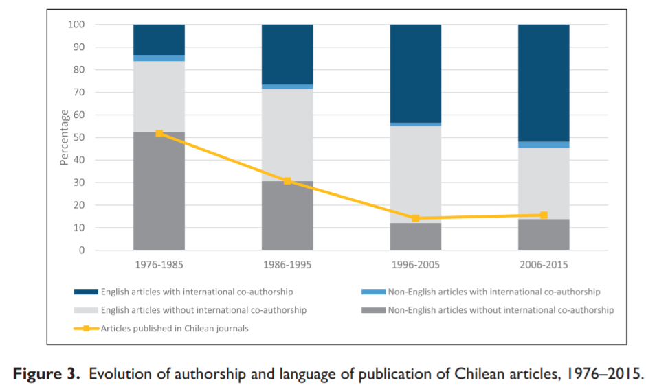
Cultura de “publica o perece” (publish or perish)
Posibles correlatos:
Temor a que “te roben la idea” → evitar poner datos/código a disposición de terceros
p-hacking: “presionar los datos” para rechazar la hipótesis nula
falseamiento de datos
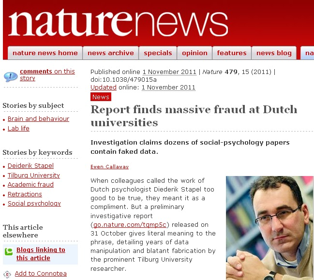
Franco et al. (2014): sesgo de publicación
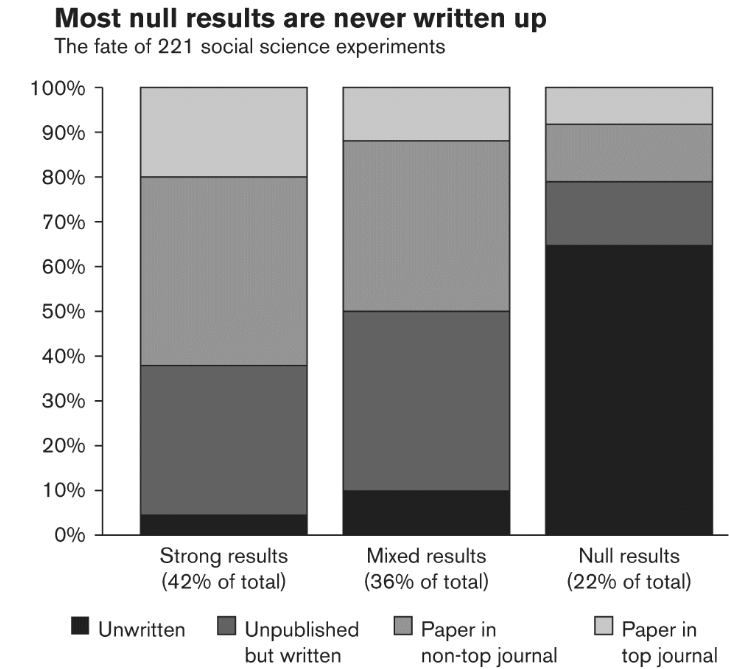
¿Alternativas?
- Estándares
- Herramientas
- Incentivos
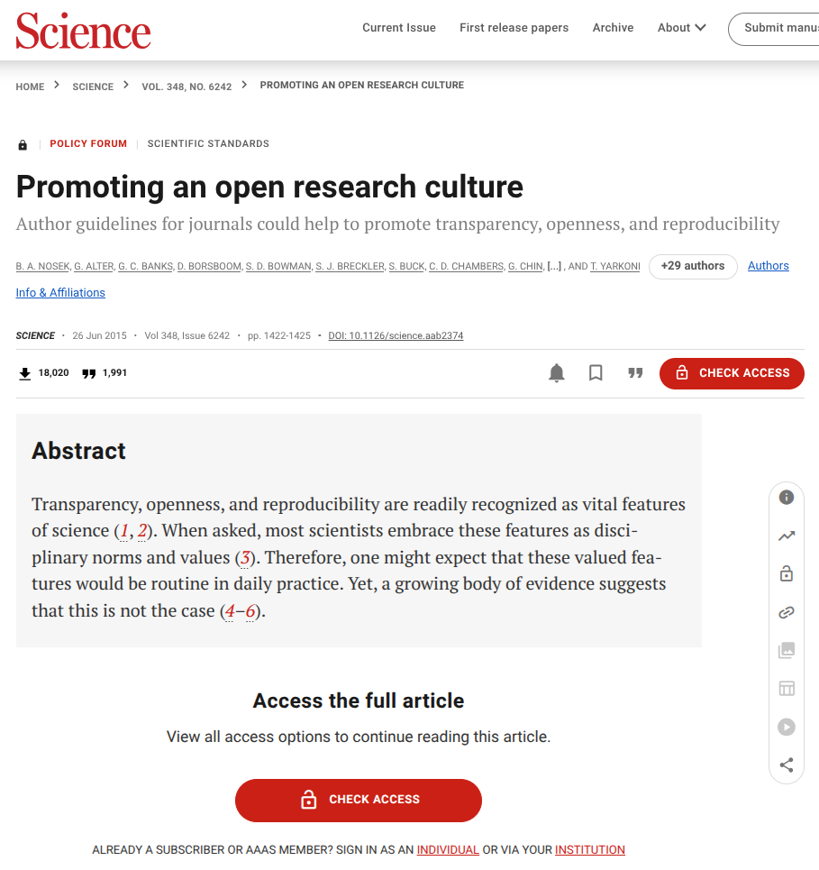
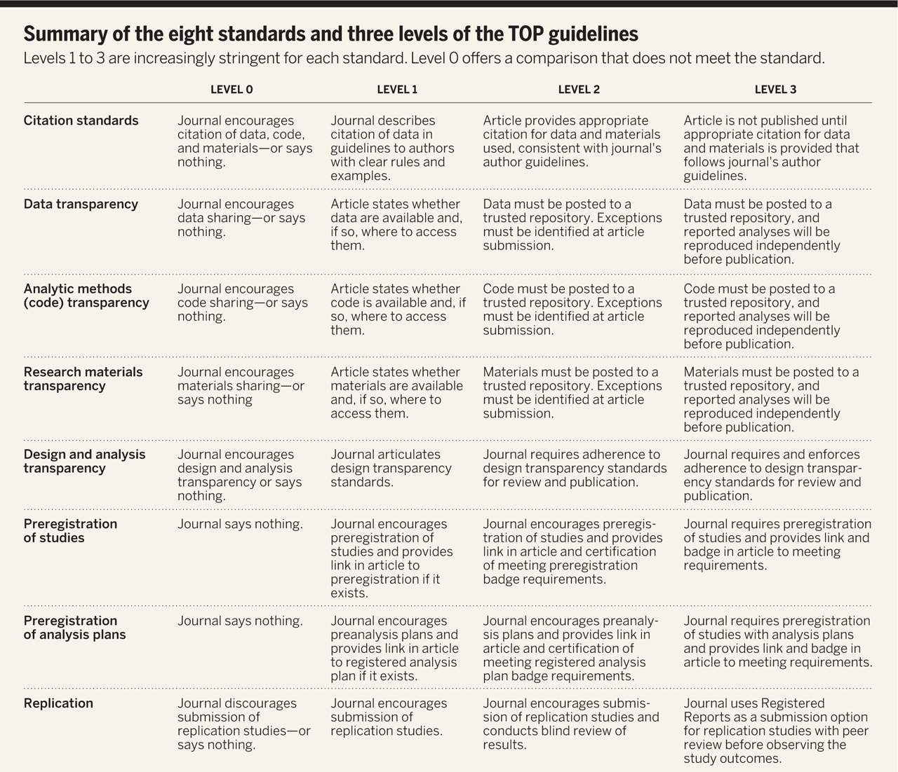
Herramientas
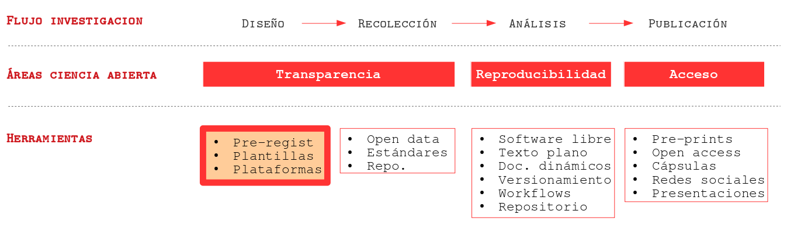
Un caso
Angélica está investigando la relación entre género e ingresos.
No encuentra los resultados esperados en base a su hipótesis (mujeres obtienen menores ingresos)
Luego ajusta la variable ingresos de continua a categórica, saca algunos outliers y obtiene una diferencia significativa con probabilidad de error p < 0.05
Luego elimina a mujeres menores de 30 años y con muy bajo nivel educacional, y obtiene un p < 0.01
¿Problema?
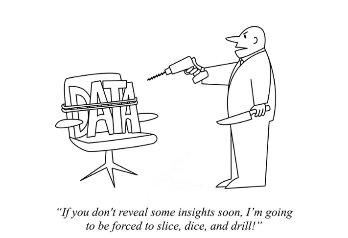
Algunas (malas) prácticas
presentar resultados exploratorios como si fueran guiados por teorías
- HARKing (Hypothesizing After Results are Known)
buscar/reportar selectivamente aquellos resultados que sí calzan con las hipótesis
- p-hacking
Consecuencias
el problema no es la exploración de datos, sino su uso en reporte selectivo de resultados de investigación
incrementa la posibilidad de rechazar erróneamente \(H_0\)
exageraciones de efectos estimados, perjudicando la replicabilidad
se confirma lo que uno está buscando, no lo que entregan los datos (y pierde sentido el recolectar datos y hacer investigación empírica)
Una solución: pre-registro
se crea un registro permanente y disponible del plan del estudio antes de mirar los datos
fechado e inmodificable
accesible fácilmente y con opción de resguardo de anonimato de autores
objetivo principal: diferenciar aspectos especificados a priori (hipótesis y análisis) de aquellos más exploratorios
Ventajas de los pre-registros
transparencia
eficiencia
mantener el foco en la teoría
no impide explorar, solo diferenciar bien exploración de hipótesis
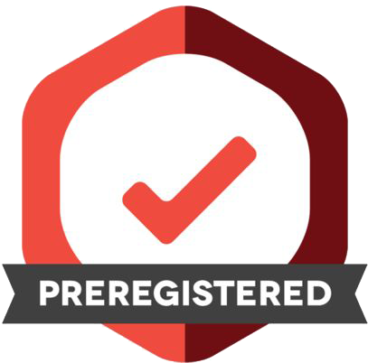
Hombros de gigante vs. conejos del sombrero

Tipos de pre-registro
Pre-registro (sin revisión): simplemente detallar hipótesis, datos y análisis y registrar en repositorio apropiado
Reporte registrado (con revisión):
- se somete a revisión en revista que permita esta opción
- de ser aceptado, se publicará independiente de sus resultados
- permite lidiar con el sesgo de publicación
Reporte pre-registrado de replicación: específico para estudios de réplica de investigación
Plantillas de pre-registro (templates)
formato de pre-registro que especifica campos a completar con información necesaria
distintas alternativas
asociadas a plataformas y plantillas de publicación
Más conocidas:
Campos típicos e información apropiada
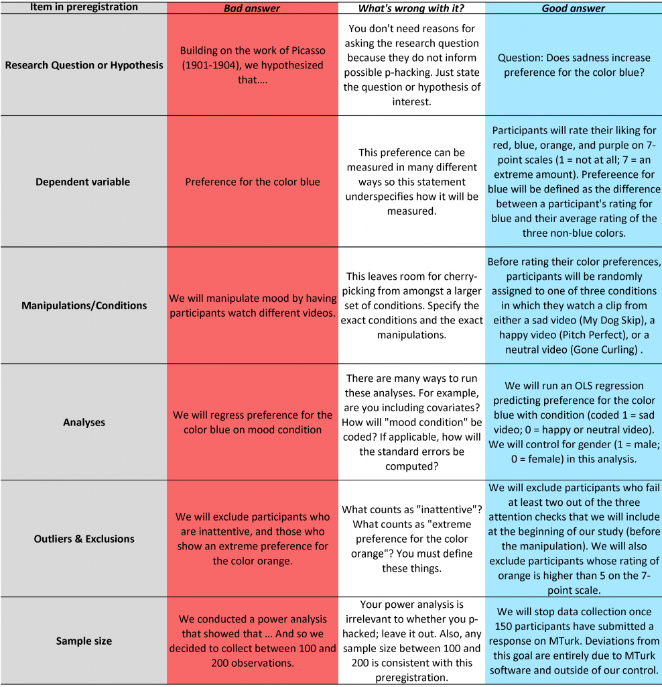
AsPredicted
desarrollado por el Credibility Lab de Wharton
formulario simple y rápido en línea
queda almacenado y disponible
Open Science Framework (OSF)
entorno de apertura de proyectos de investigación completos (más allá de los pre-registros)
se pueden pre-registrar estudios asociados a un proyecto ya generado en OSF, o de manera independiente
disponibilidad de múltiples plantillas de pre-registro
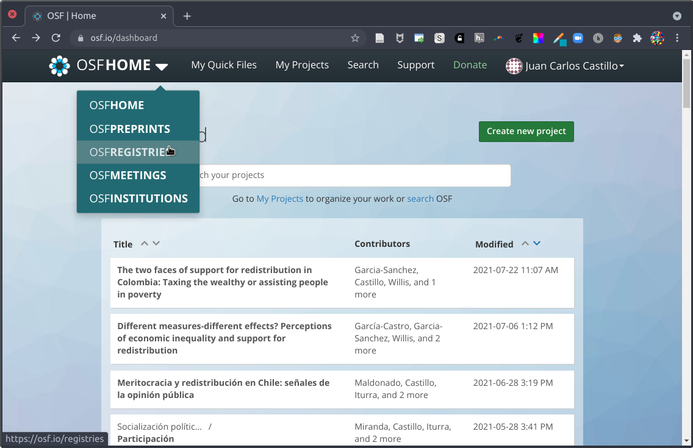
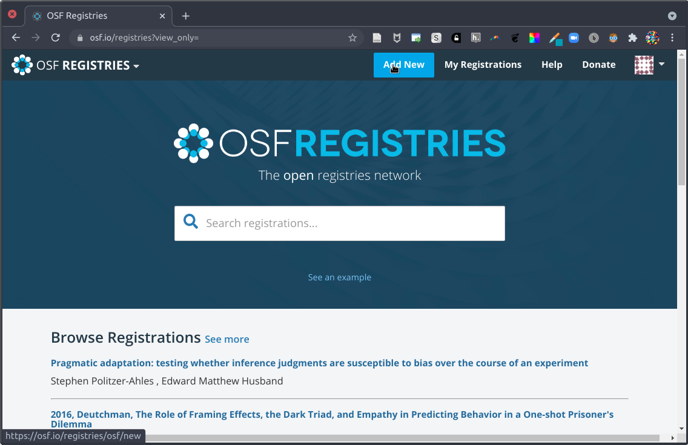
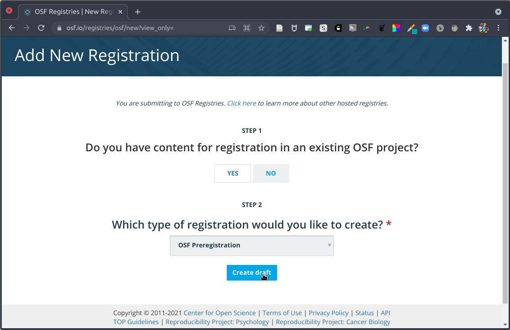
Referencias sobre pre-registro
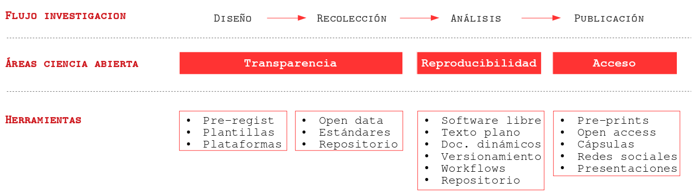
Open Science Framework
Open
Science
Framework
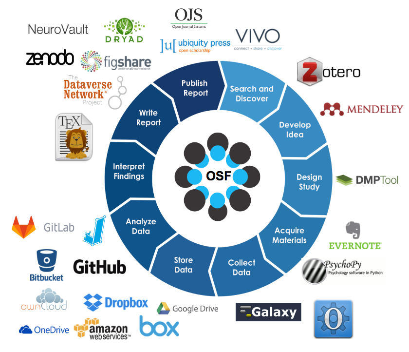
Juntando las piezas
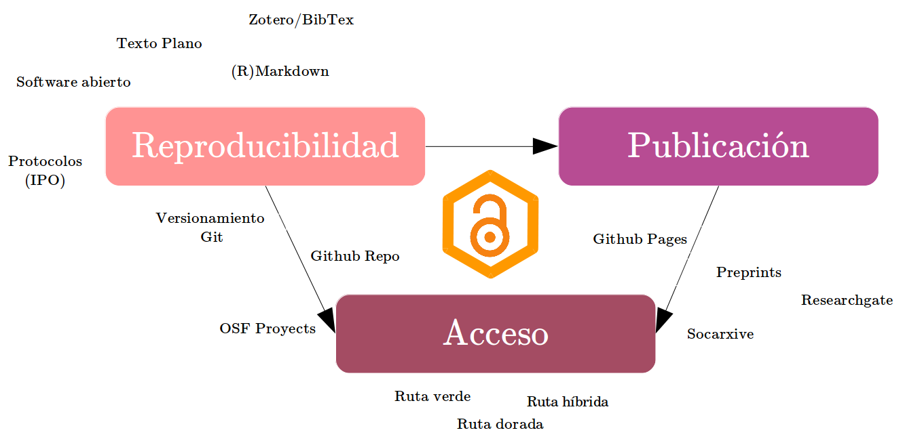
Acceso a las publicaciones
Bases: Declaración de Budapest 2002
Budapest Open Access Initiative
By “open access” to this literature, we mean its free availability on the public internet, permitting any users to read, download, copy, distribute, print, search, or link to the full texts of these articles, crawl them for indexing, pass them as data to software, or use them for any other lawful purpose, without financial, legal, or technical barriers other than those inseparable from gaining access to the internet itself.
The only constraint on reproduction and distribution, and the only role for copyright in this domain, should be to give authors control over the integrity of their work and the right to be properly acknowledged and cited.
Bases: Declaración de Berlín 2003
The author(s) and right holder(s) of such contributions grant(s) to all users a free, irrevocable, worldwide, right of access to, and a license to copy, use, distribute, transmit and display the work publicly …
A complete version of the work and all supplemental materials, including a copy of the permission as stated above, in an appropriate standard electronic format is deposited (and thus published) in at least one online repository
Más información: European Commission Open Access
Rutas de accesibilidad
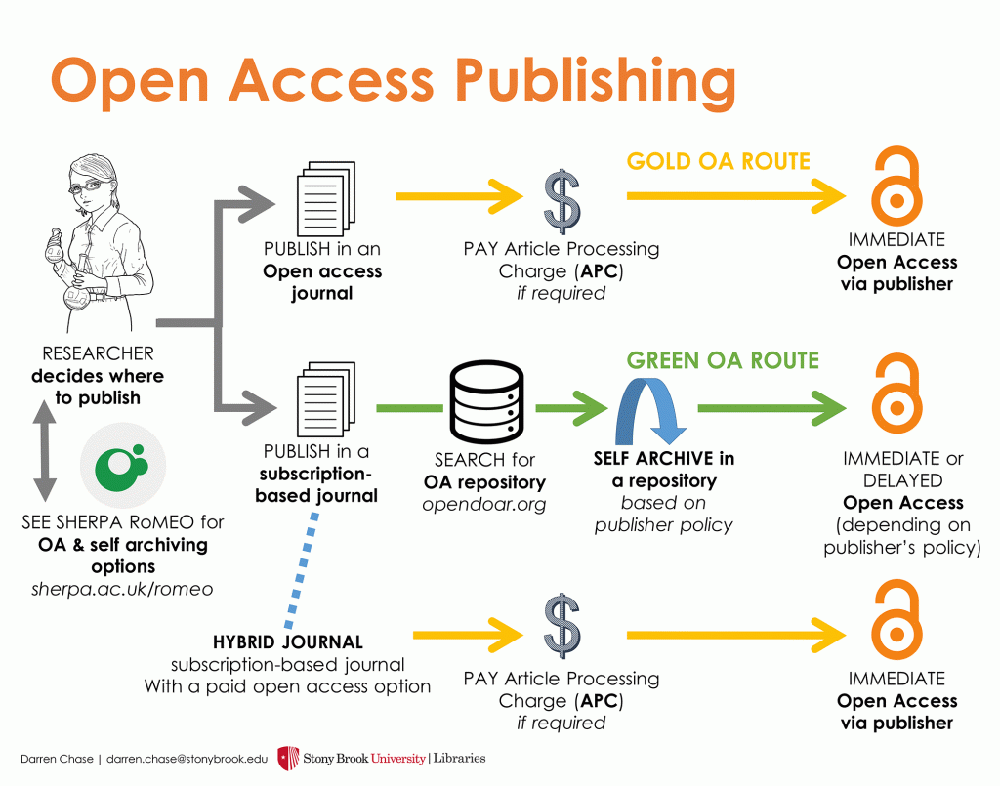
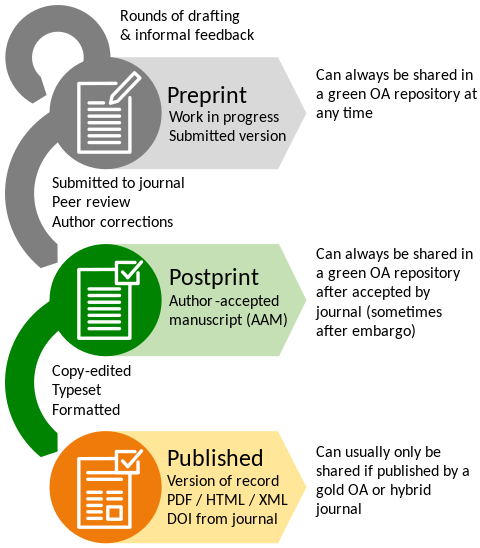
Políticas de acceso de las revistas
Información sobre políticas de acceso de las revistas: https://v2.sherpa.ac.uk/romeo/
Pre-prints
Pre-prints
Los preprints o pre-impresos son publicaciones abiertas de un reporte de investigación, por lo general un artículo, antes de un proceso de revisión por pares
El objetivo general es hacer disponibles y difundir reportes de investigación
Son referenciables / citables / accesibles
Pueden ser una versión inicial/borrador o una versión final
Concepto general: ciencia en tiempo real
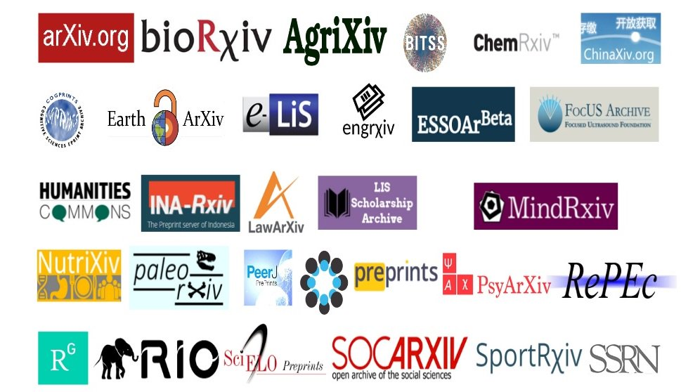
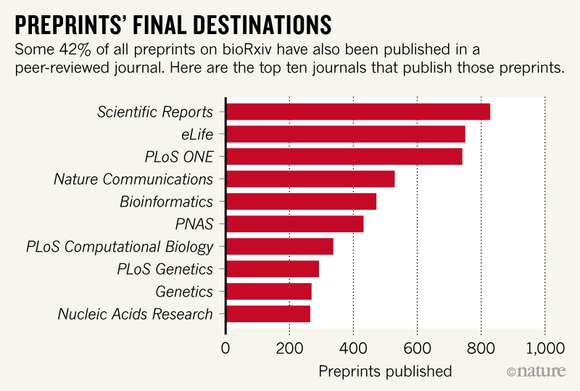
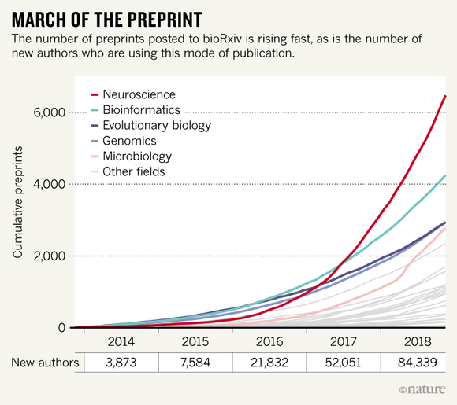
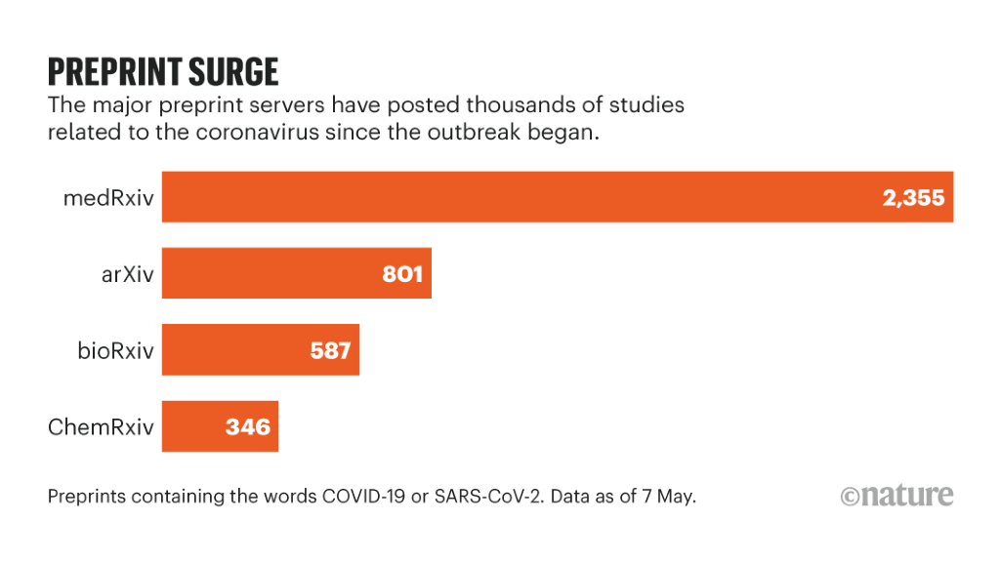
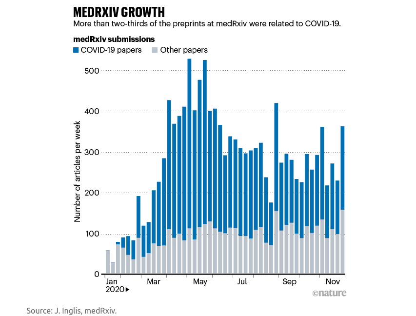
SocArXiv
Servicio de pre-prints de ciencias sociales vinculado al OSF
Permite subir documentos (pdf) fácilmente desde proyectos OSF
Tiene un sistema de moderación: un equipo de moderadores realiza un filtro grueso para determinar el carácter académico del pre-print
Otorga un DOI (digital object identifier), que permite su citación y rastreo académico
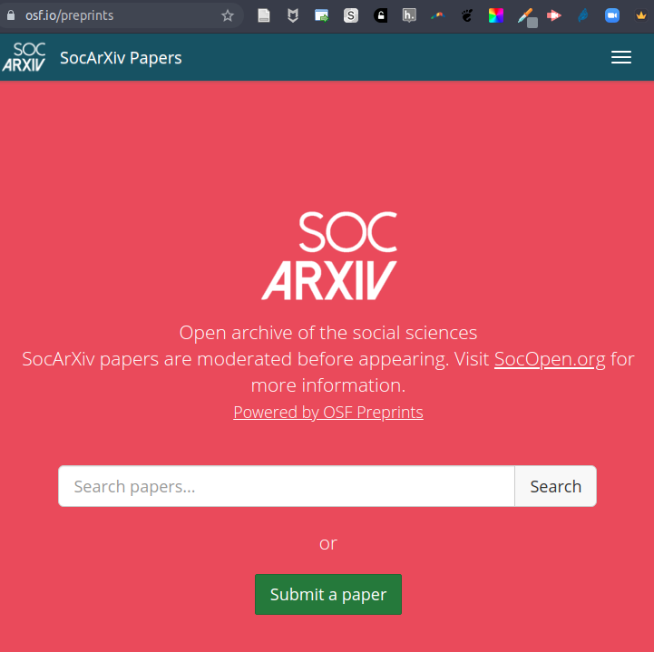
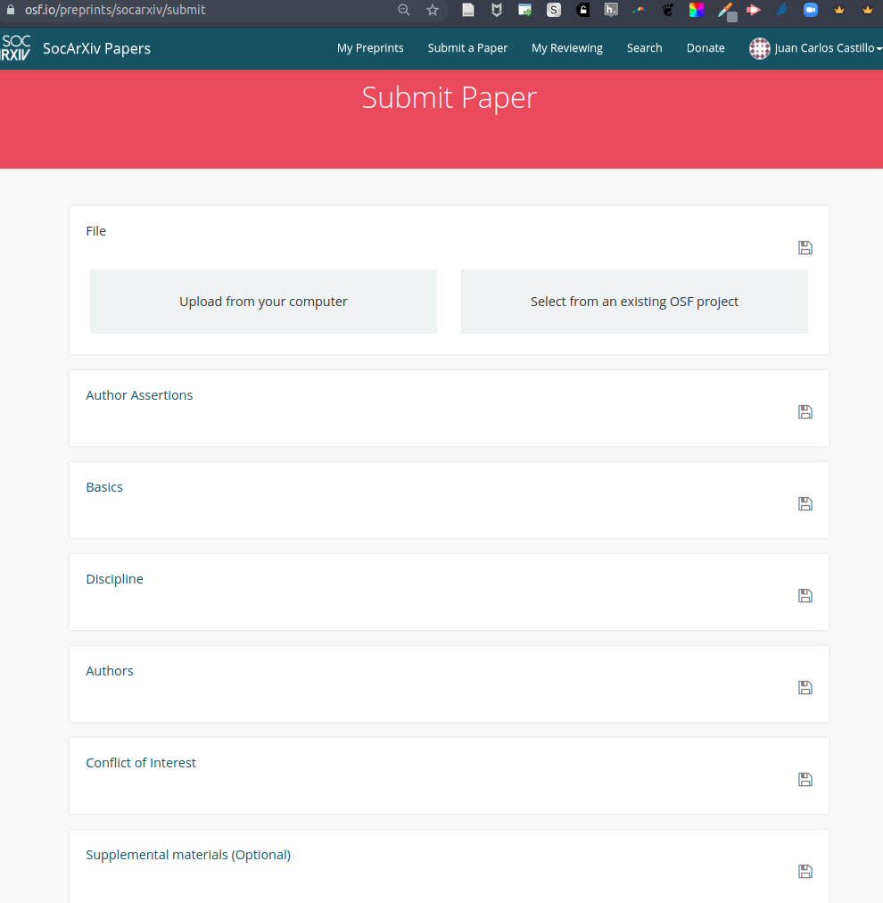
Sobre las licencias de trabajos abiertos
permiten resguardar el derecho de propiedad y reconocimiento (atribución) de quienes crean la obra
diferentes elementos:
- posibilidad de “derivar” (adaptar) y publicar un nuevo producto
- posibilidad de generar derivados comerciales
- posibilidad de que derivados tengan distintas licencias
más información: https://creativecommons.org/licenses/
Resumen
Crisis de reproducibilidad y acceso
Principios de la ciencia y ética de la investigación social
Algunas herramientas
- Pre-registros
- Pre-prints
Ética de Investigación en Ciencias Sociales · 2026
Ciencia Abierta e Investigación Social
Prof. Juan Carlos Castillo Departamento de Sociología · Universidad de Chile 2do Semestre 2026